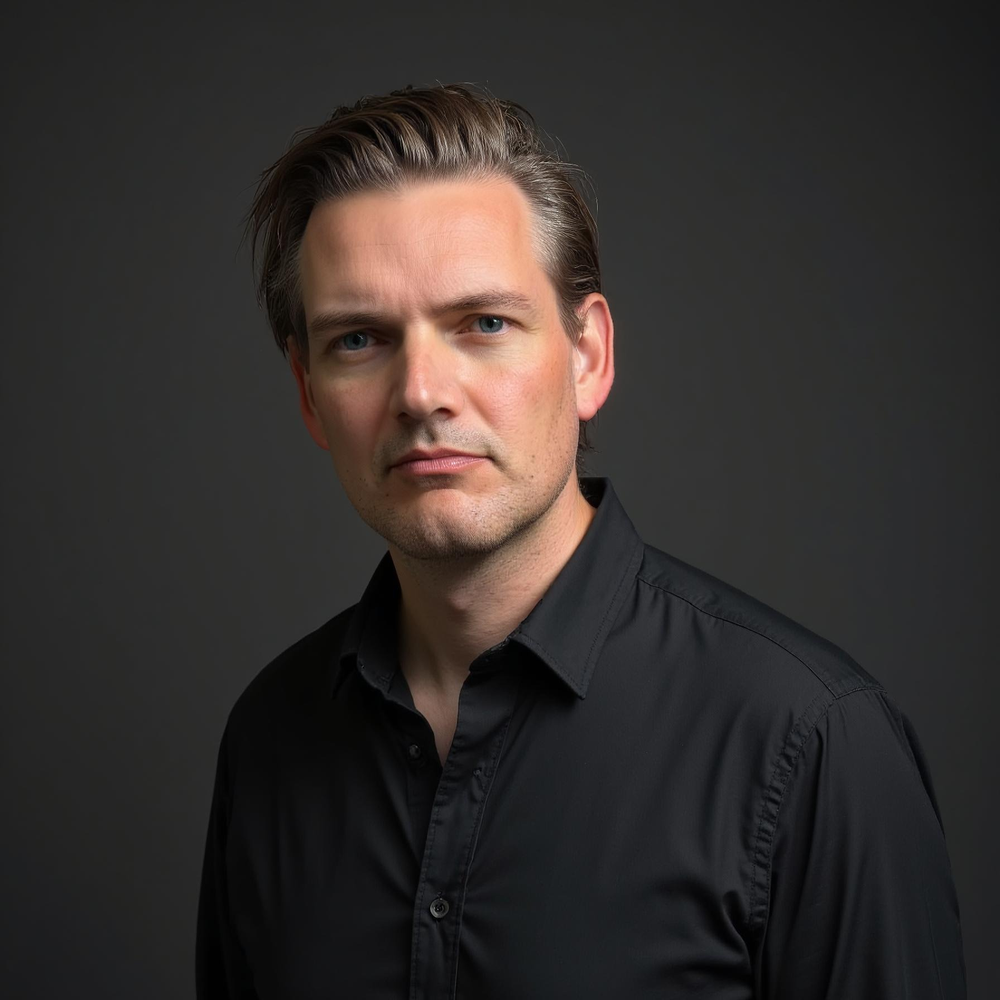

Co-founder, CEO
AI / Cybersecurity. Startup with an elite team working on an important problem in the device security space.
I am an avid enthusiast of tech, venture, music, philosophy, and design. I live and operate in the SF Bay Area with my family who inspire me every day. I like to hike Mt Tam and talk shop with domain experts. Feel free to get in touch.

I built the neighborhoods first pre-internet BBS in my parents’ basement one grey winter in Canada. As the internet hit, I ran through all the things, from coding to community, hardware to ecommerce. Fast forward to the last decade and I have spent countless hours working with startups and leading teams of 50+ to bring design-led products and platforms into the world. From finance to brand, factory floor to board room, I have developed a unique set of chops to drive technology and innovation forward.
AI / Cybersecurity. Startup with an elite team working on an important problem in the device security space.
Mobility / Hardware. Built a towable vehicle manufacturer from the ground up with a group of brilliant cofounders, designers, and engineers. Led executive team, handled fundraising, biz dev, finance, ops, governance, patents, brand, and strategy.
Venture Investing. Syndicate management and angel investment in early-stage hardware, software, biotech, and consumer companies. Educated bets from a design-meets-finance perspective.
Design / Startup Incubation. Worked with countless startups to develop their business and market presence. Partnered with one of the top identity designers in the world (Uber, Expa, and Emulate Bio).
Device Manufacturer. Developed and co-led manufacturing of various device and component lines, including SSD, power management, and cooling.
Device Manufacturer. Cut my teeth in the hardware industry with the pioneer in aftermarket computer power supply and cooling devices, PC Power & Cooling.
University of Western Ontario
2001 · BA Hons · Anthropology. Archaeology, Culture, and Linguistics.